Демонстрация работы с таблицами Excel в WPF
На данном занятии будет реализована возможность экспорта данных из приложения для визуализации расходов пользователей в таблицу Excel. Расходы каждого пользователя будут экспортироваться в отдельный лист, названием которого будет ФИО пользователя. Расходы будут распределены по категориям, причем по каждой категории будут указываться общие затраты. Основные шаги построения приложения:
- Предварительные шаги
- Реализация экспорта
- Проверка корректной работы приложения
Предварительные шаги
1. Подключаем библиотеку для работы с Excel
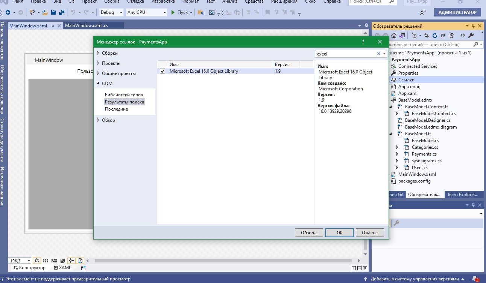
Важно
Для экспорта данных в Excel используется библиотека Interop. Excel (Object library), расположенная во вкладке COM
2. Добавляем кнопку экспорта
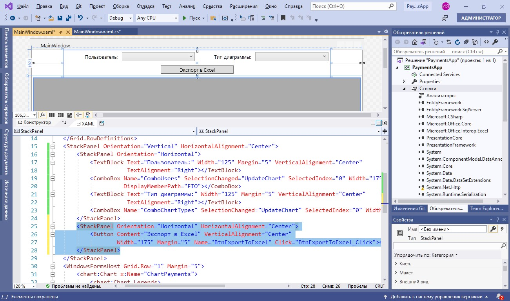
Важно
Экспорт данных в Excel будет осуществляться с помощью кнопки «Экспорт в Excel»
3. Подключаем пространство имен для работы с Excel
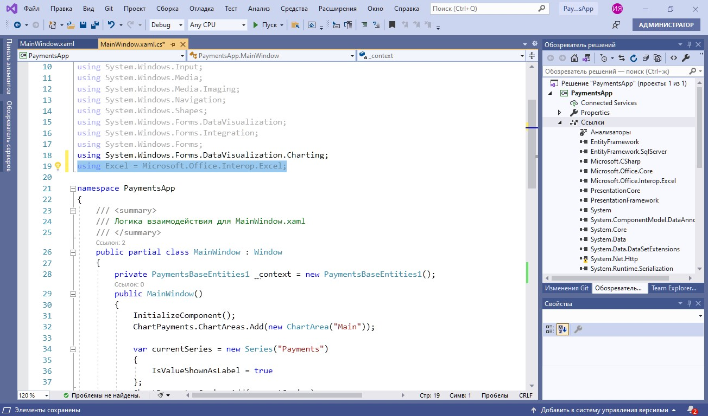
Важно
Требуемое пространство имен подключается с помощью директивы using
Реализация экспорта
1. Получаем список пользователей
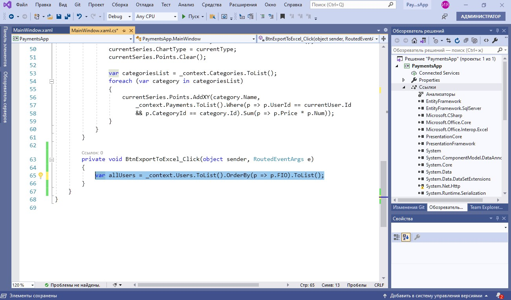
Важно
Список пользователей выгружается из базы данных, причем сразу производится сортировка по ФИО
2. Создаем новую книгу Excel
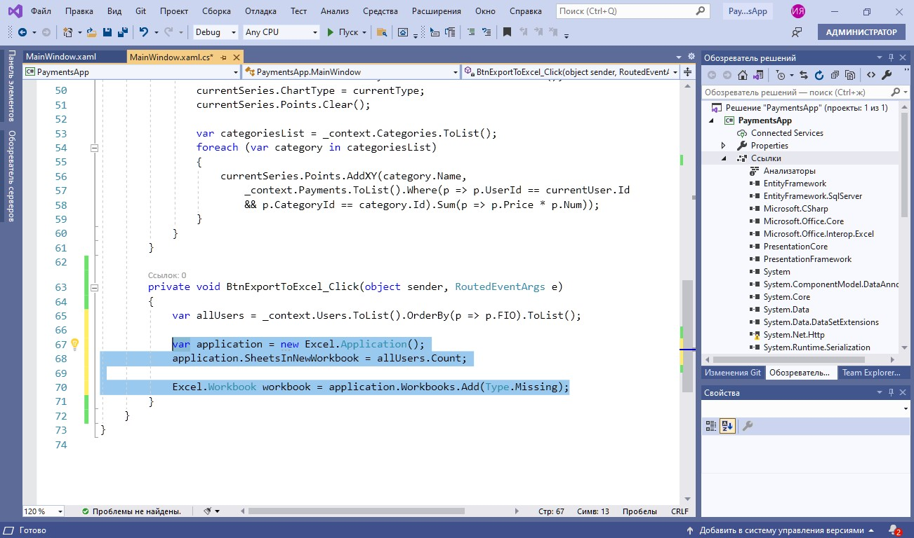
Важно
Объявляем переменную с приложением Excel, указывая количество листов (sheets) равным количеству пользователей в БД. Также добавляем рабочую книгу (workbook)
3. Называем листы
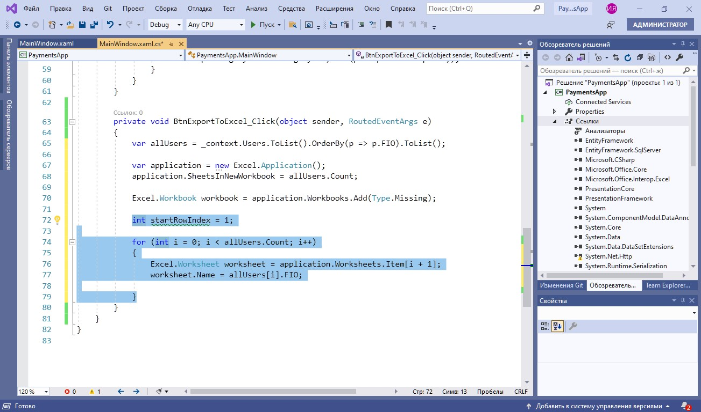
Важно
В цикле по списку пользователей выбирается текущий лист. Текущему листу присваивается ФИО текущего пользователя. Следует обратить внимание, что строки в Excel начинаются с 1, потому счетчик строк startRowIndex=1
4. Добавляем название колонок
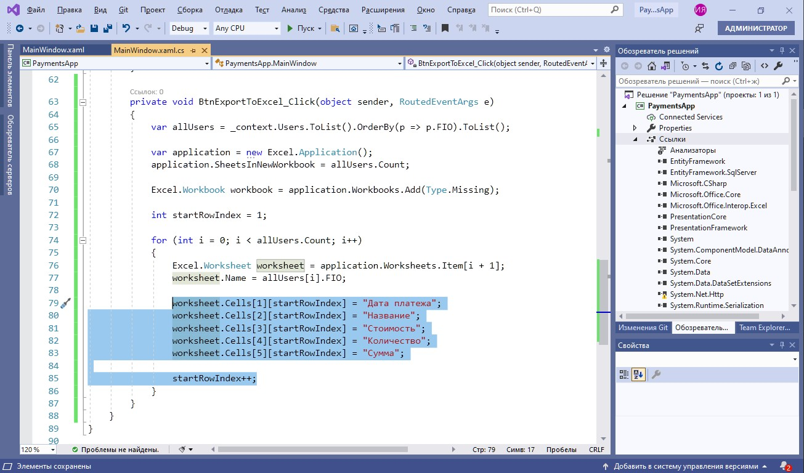
Важно
Название столбцов добавляется в верхнюю строчку листа, после чего увеличивается значение счетчика startRowIndex. Следует обратить внимание, что при обращении к ячейке сначала указывается номер ее столбца, а затем — номер строки
5. Сгруппируем платежи по категориям
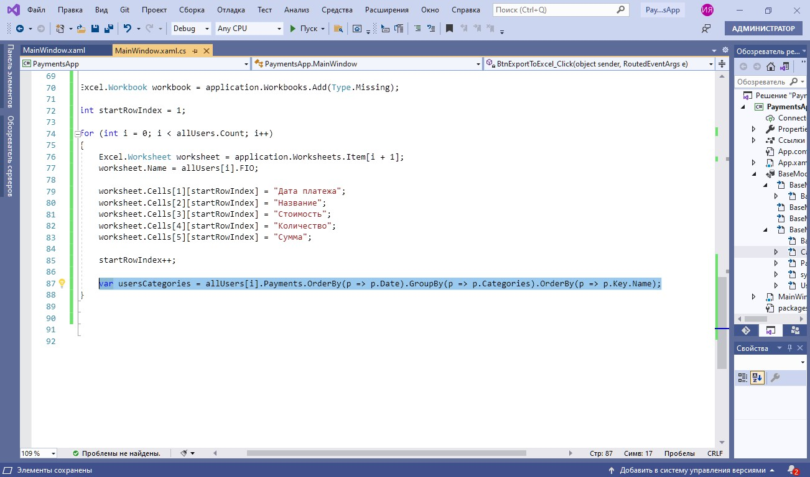
Важно
Платежи текущего пользователя группируются с помощью GroupBy и сортируются по дате и названию категории
6. Настраиваем отображение названий категорий
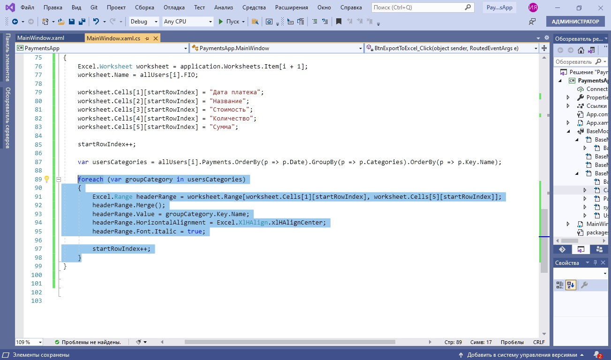
Важно
Название каждой категории помещается в объединенную ячейку, выравнивается по центру и отображается курсивом. Далее идет переход к следующей строке
7. Добавляем информацию о платежах
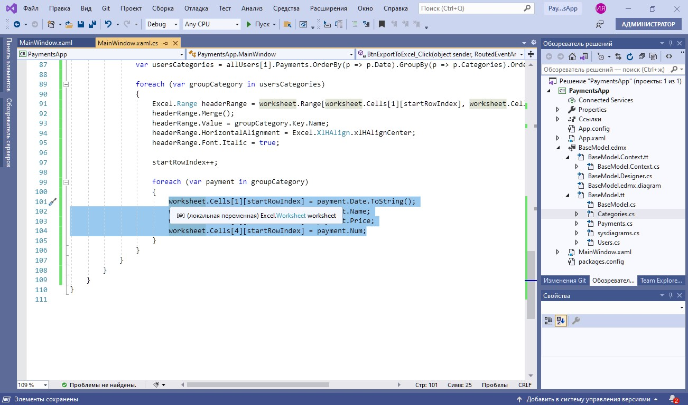
Важно
В цикле по платежам для каждой категории заносим в ячейки таблицы текущей строки дату платежа (в заданном формате), наименование платежа, цену и количество платежей данного типа
8. Рассчитываем величину платежа каждой категории
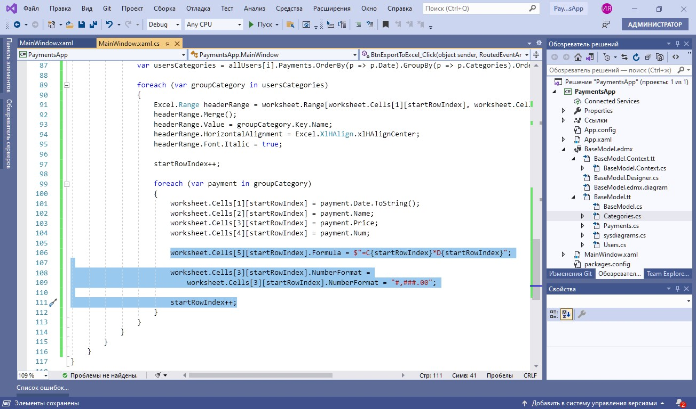
Важно
Чтобы Excel автоматически пересчитывал сумму платежа при изменении количества или цены платежа, следует рассчитывать сумму не в коде, а прямо в ячейке Excel, добавляя туда формулу для расчета. Также для денежных значений можно установить числовой формат
9. Добавляем название к ячейкам для хранения общих затрат
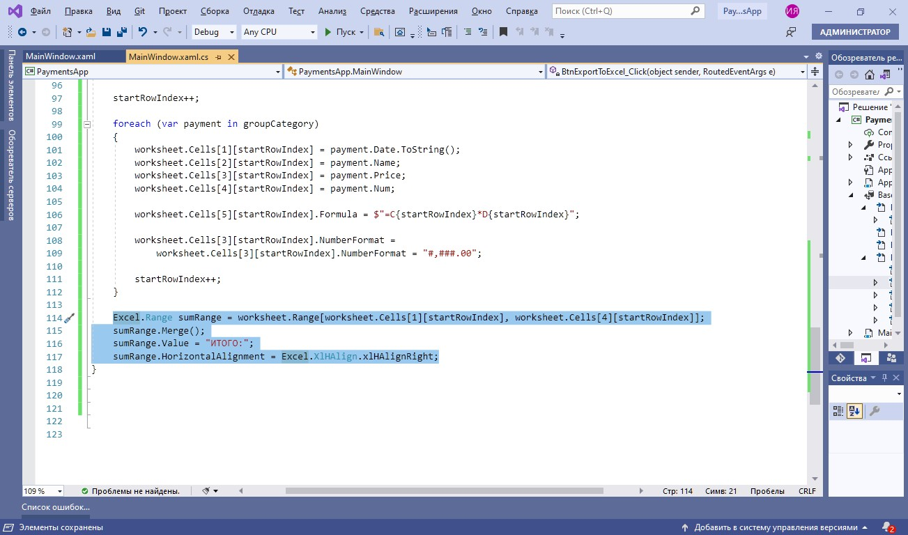
Важно
Название ячейки Итого помещается в объединенную ячейку (1−4 столбец)
10. Рассчитываем величину общих затрат
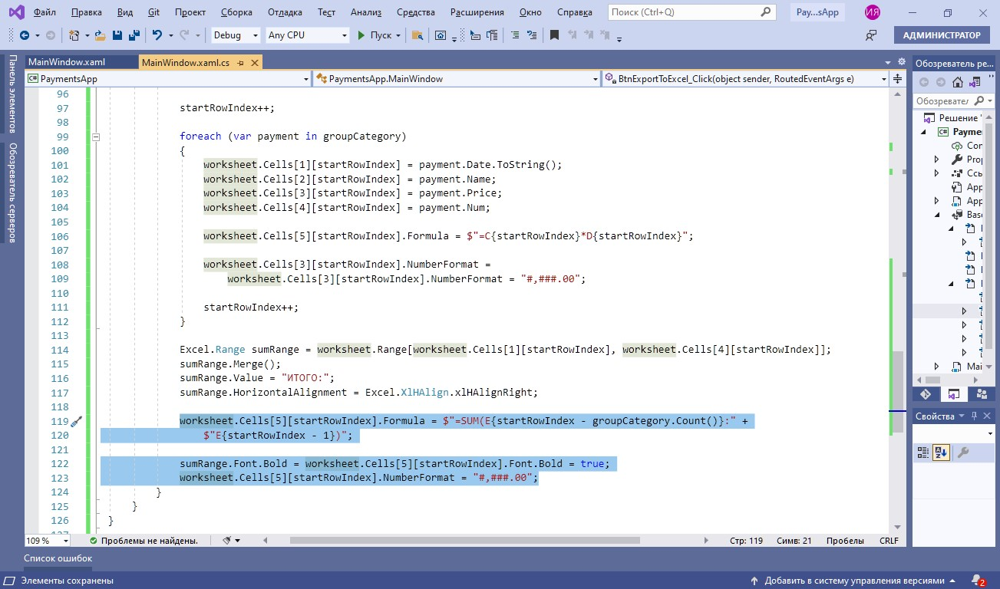
Важно
Для расчета начального значения диапазона ячеек, учитываемого при расчете, из номера текущей строки вычитается общее количество платежей в рамках категории. Далее величина итоговой суммы выделяется жирным шрифтом и к ней применяется денежный формат
11. Завершаем оформление таблицы и реализацию приложения
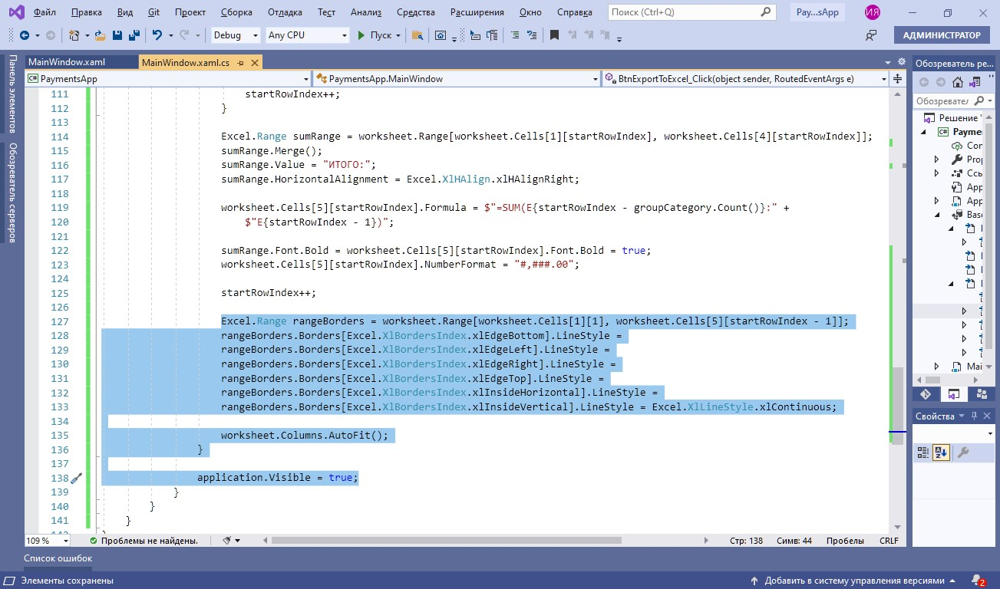
Важно
Оформление включает в себя: добавление границ (внешних и внутренних), установку автоширины всех столбцов листа. Последняя строчка разрешает отобразить таблицу по завершении экспорта
Проверка корректной работы приложения
1. Делаем экспорт данных
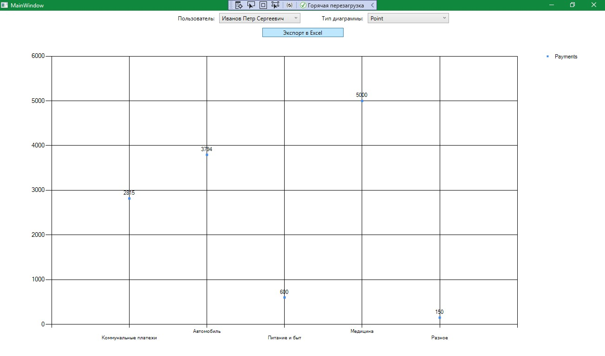
Важно
Экспорт данных производится по нажатию на кнопку «Экспорт в Excel»
2. Проводим анализ корректности работы
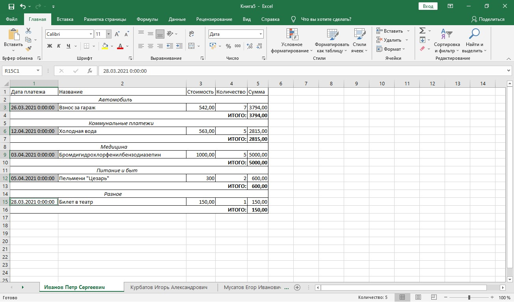
Итоги
Вы познакомились с основными программными методами работы с таблицами Excel в WPF.